Ver código
options(
knitr.table.format = "html",
scipen = 999
)options(
knitr.table.format = "html",
scipen = 999
)
# Verificar, instalar y activar el paquete "tidyverse"
if (!require(tidyverse)) {
install.packages("tidyverse")
}
library(tidyverse)
# Verificar, instalar y activar el paquete "kableExtra"
if (!require(kableExtra)) {
install.packages("kableExtra")
}
library(kableExtra)
# Verificar, instalar y activar el paquete "readxl"
if (!require(readxl)) {
install.packages("readxl")
}
library(readxl)En el ámbito de la investigación académica, la estadística descriptiva se rige como el instrumento fundamental para transformar conjuntos de datos brutos en información con valor diagnóstico. El presente informe tiene como objetivo principal la aplicación de métodos de distribución de frecuencias sobre una base de datos de carácter educativo, compuesta por 300 registros que integran dimensiones académicas, sociodemográficas y tecnológicas de una población estudiantil.
La organización de este documento sigue una estructura lógica que transita desde la fundamentación teórica hasta la ejecución práctica en lenguaje R. En la primera sección, se establecen los conceptos de población, muestra y la clasificación de variables (cualitativas y cuantitativas), elementos críticos para determinar el tratamiento estadístico adecuado. Posteriormente, se detalla la construcción de tablas de frecuencia, abordando indicadores clave como la frecuencia absoluta (fi), relativa (hi) y sus respectivas acumulaciones, los cuales permiten sintetizar grandes volúmenes de datos en cuadros de fácil interpretación.
Se realiza un procesamiento técnico que permite segmentar variables discretas (como el estrato y número de cursos) y variables continuas (como el promedio académico y las horas de estudio). Este análisis se complementa con representaciones gráficas (histogramas, diagramas de barras y circulares), que facilitan la identificación visual de patrones, tendencias y niveles de dispersión en la muestra.
Finalmente, este trabajo no solo busca el cumplimiento de un rigor matemático, sino también proporcionar una lectura integral sobre la realidad del entorno educativo analizado. A través de la síntesis de variables como el nivel de satisfacción, el uso de tecnología y el rendimiento académico, se pretende ofrecer una base sólida de evidencia que contribuya a la comprensión de los factores que inciden en el proceso de enseñanza-aprendizaje.
La distribución de frecuencias, es un método utilizado para organizar y resumir información. Bajo este método, los datos recolectados se ordenan y clasifican, indicándonos la frecuencia o sea el número de veces que se repiten.
Formalmente, si se tiene una muestra de tamaño n formada por observaciones de una variable X X=x1,x2,x3,…,xn Se podrá decir también, que nos permite manejar grandes cantidades de información en espacios reducidos, en formas de cuadros o tablas, complementadas con gráficas.
Por población o universo, se entiende como un conjunto de medidas para ser aplicadas a una característica cuantitativa, o como el recuento de todas las unidades que presentan una característica común, siendo ésta cualitativa. También se puede definir a la población como un conjunto de elementos o unidades. Lo que se estudia en una unidad o elemento son sus características.
Cuando se toman todas las unidades o elementos de la población, se habla de una investigación ex-haustiva o censo. Si sólo se investiga una parte, se le considera como investigación parcial o muestra.
La muestra: la muestra,para que sea representativa de la población, requiere que las unidades o elementos sean seleccionadas al azar, en tal forma que cada una de ellas tenga la misma posibilidad de ser seleccionada.
Se usan letras mayúsculas o letras del alfabeto griego como símbolos en poblaciones, en cambio, en la muestras se emplean letras minúsculas.
Los caracteres de los elementos de una población pueden ser cualitativos o cuantitativos, Los datos cualitativos, denominados también atributos, son todos aquellos elementos que pueden ser descritos cualitativamente, es decir mediante palabras; son ejemplos de atributos: la clasificación de los alumnos de una universidad por lugar de origen; clasificación de un grupo de personas por ocupación, por cargo, por sexo, etc.
Los caracteres cuantitativos denominados variables, son todas aquellas características susceptibles de ser expresadas cuantitativamente, es decir, mediante números. Ejemplo: peso, estatura, edad, número de hijos, salarios, etc.
Tipos de variables:
Las variables se dividen en discretas y continuas. Es de tener en cuenta que esta clasificación tiene más valor teórico que práctico.
Las variables discretas: son aquéllas que admiten solamente valores enteros, es decir, no tienen valores intermedios. Ejemplo: el número de hijos por familia será discreta, ya que no se podrá decir que una familia tiene dos hijos y medio; el número de empleados por departamento en una empresa, etc.
Las variables continuas: son aquéllas que admiten valores fraccionarios, pudiéndose establecer in tervalos. Ejemplo: la estatura de una persona que mide un metro con setenta centímetros; que pesa sesen ta kilos, una libra y cuatro onzas, etc.
En una tabla de distribución de frecuencias se utilizan diferentes medidas para describir la presencia de cada valor o intervalo.
La frecuencia absoluta representa el número de veces que aparece un valor o clase en el conjunto de datos.
Se denota por:
f_i
donde:
La suma de todas las frecuencias absolutas es igual al tamaño de la muestra:
\sum_{i=1}^{k} f_i = n
La frecuencia absoluta acumulada representa la suma progresiva de las frecuencias absolutas hasta una determinada categoría.
Se denota por:
F_i
y se calcula como:
F_i = \sum_{j=1}^{i} f_j
La última frecuencia acumulada siempre es igual al tamaño total de la muestra:
F_k = n
La frecuencia relativa expresa la proporción de observaciones que corresponde a una categoría respecto al total de datos.
Se denota por:
h_i
y se calcula como:
h_i = \frac{f_i}{n}
Propiedad:
0 \le h_i \le 1
y
\sum_{i=1}^{k} h_i = 1
La frecuencia relativa acumulada representa la suma progresiva de las frecuencias relativas.
Se denota por:
H_i
y se calcula como:
H_i = \sum_{j=1}^{i} h_j
Propiedad:
H_k = 1
La frecuencia porcentual expresa la frecuencia relativa en porcentaje.
Se calcula como:
p_i = h_i \times 100
Propiedad:
\sum_{i=1}^{k} p_i = 100
Cuando los datos son numerosos, se agrupan en intervalos de clase.
Un intervalo de clase se define como:
(L_i, L_s)
donde:
La amplitud de clase se calcula como:
A = L_s - L_i
o también mediante:
A = \frac{R}{k}
donde:
El rango mide la dispersión total de los datos:
R = X_{max} - X_{min}
La marca de clase representa el punto medio de cada intervalo:
x_i = \frac{L_i + L_s}{2}
Las distribuciones de frecuencias poseen varias propiedades fundamentales:
1. Conservación del tamaño de la muestra
\sum_{i=1}^{k} f_i = n
2. Suma de frecuencias relativas
\sum_{i=1}^{k} h_i = 1
3. Suma de frecuencias porcentuales
\sum_{i=1}^{k} p_i = 100
4. Monotonía de las frecuencias acumuladas
Las frecuencias acumuladas son crecientes:
F_1 \le F_2 \le F_3 \le \cdots \le F_k
5. Último valor acumulado
F_k = n
y
H_k = 1
Una tabla típica contiene las siguientes columnas:
| Clase | Marca de clase | Frecuencia absoluta | Frecuencia acumulada | Frecuencia relativa | Frecuencia relativa acumulada |
|---|---|---|---|---|---|
| C_i | x_i | f_i | F_i | h_i | H_i |
Una tabla de doble entrada (o tabla de contingencia) es una herramienta que permite organizar y resumir datos correspondientes a dos variables simultáneamente, mostrando cómo se distribuyen de manera conjunta.
Una tabla de doble entrada está compuesta por:
Filas Representan las categorías de una primera variable (Variable A).
Columnas Representan las categorías de una segunda variable (Variable B).
Celdas internas Contienen las frecuencias (absolutas o relativas) que corresponden a la combinación de ambas variables.
Totales marginales
Total general Suma total de todas las observaciones (n)
| Categoría B1 | Categoría B2 | … | Total | |
|---|---|---|---|---|
| Categoría A1 | n₁₁ | n₁₂ | … | n₁• |
| Categoría A2 | n₂₁ | n₂₂ | … | n₂• |
| … | … | … | … | … |
| Total | n•₁ | n•₂ | … | n |
La presente base de datos corresponde a información de carácter educativo, en la cual se recopilan diferentes variables relacionadas con aspectos académicos y sociodemográficos de los estudiantes. Este conjunto de datos permite desarrollar un análisis descriptivo mediante la organización y síntesis de la información a través de distribuciones de frecuencia.
En la base se identifican variables como género, nivel educativo, estrato, número de cursos, horas de estudio, promedio académico, porcentaje de asistencia, uso de tecnología y nivel de satisfacción, lo que posibilita un abordaje integral de la información. A partir de estos datos, se busca identificar patrones y tendencias que faciliten la comprensión del comportamiento de la población analizada.
Este reconocimiento inicial constituye el punto de partida para la aplicación de herramientas estadísticas que permitan una adecuada interpretación de los datos.
primero, cargamos las librerias necesarias y leemos el archivo Excel.
educacion <- read_excel("Data/educacion.xlsx")MOSTRAR
head(educacion)# A tibble: 6 × 10
ID Genero Nivel_Educativo Estrato Cursos Horas Promedio Asistencia
<dbl> <chr> <chr> <chr> <dbl> <dbl> <dbl> <dbl>
1 1 Femenino Universidad Alto 5 26.8 4.37 51.3
2 2 Femenino Universidad Bajo 4 9.05 4.9 51.1
3 3 Femenino Secundaria Medio 8 28.2 1.26 92.4
4 4 Femenino Universidad Bajo 6 17.9 1.96 64.8
5 5 Masculino Universidad Alto 4 15.9 3.6 57.0
6 6 Masculino Primaria Bajo 2 27.6 4.58 76.1
# ℹ 2 more variables: Tecnologia <chr>, Satisfaccion <chr>TIPOS DE VARIABLES
glimpse(educacion)Rows: 300
Columns: 10
$ ID <dbl> 1, 2, 3, 4, 5, 6, 7, 8, 9, 10, 11, 12, 13, 14, 15, 16,…
$ Genero <chr> "Femenino", "Femenino", "Femenino", "Femenino", "Mascu…
$ Nivel_Educativo <chr> "Universidad", "Universidad", "Secundaria", "Universid…
$ Estrato <chr> "Alto", "Bajo", "Medio", "Bajo", "Alto", "Bajo", "Bajo…
$ Cursos <dbl> 5, 4, 8, 6, 4, 2, 2, 6, 8, 4, 6, 2, 2, 6, 8, 5, 1, 8, …
$ Horas <dbl> 26.82, 9.05, 28.19, 17.86, 15.87, 27.63, 3.31, 14.81, …
$ Promedio <dbl> 4.37, 4.90, 1.26, 1.96, 3.60, 4.58, 1.47, 3.89, 4.65, …
$ Asistencia <dbl> 51.29, 51.06, 92.35, 64.85, 57.01, 76.11, 84.15, 93.22…
$ Tecnologia <chr> "Bajo", "Bajo", "Bajo", "Medio", "Alto", "Medio", "Baj…
$ Satisfaccion <chr> "Muy alta", "Media", "Muy alta", "Muy alta", "Muy baja…NOMBRES DE VARIABLES
educacion %>% names [1] "ID" "Genero" "Nivel_Educativo" "Estrato"
[5] "Cursos" "Horas" "Promedio" "Asistencia"
[9] "Tecnologia" "Satisfaccion" CANTIDAD DE VARIABLES
educacion %>% names %>% length[1] 10TRANSFORMAR VARIABLES
#VARIABLES CUALITATIVA NOMINAL
educacion$Genero <- as.factor(educacion$Genero)
#VARIABLES CUALITATIVAS ORDINALES
educacion$Nivel_Educativo <- factor(educacion$Nivel_Educativo,
levels = c("Primaria", "Secundaria", "Universidad"), ordered = TRUE)
educacion$Estrato <- factor(educacion$Estrato, levels = c ("Bajo", "Medio", "Alto"), ordered = TRUE)
educacion$Tecnologia <- factor(educacion$Tecnologia, levels = c ("Bajo", "Medio", "Alto"), ordered = TRUE)
educacion$Satisfaccion <- factor(educacion$Satisfaccion, levels = c ("Muy baja", "Baja", "Media", "Alta", "Muy alta"), ordered = TRUE)
#VARIABLES CUANTITATIVAS DISCRETAS
educacion$Cursos = as.integer(educacion$Cursos)
educacion$Horas = as.integer(educacion$Horas)
educacion$Promedio = as.integer(educacion$Promedio)
educacion$Asistencia = as.integer(educacion$Asistencia)NUEVA ESTRUCTURA DE VARIABLES
glimpse(educacion)Rows: 300
Columns: 10
$ ID <dbl> 1, 2, 3, 4, 5, 6, 7, 8, 9, 10, 11, 12, 13, 14, 15, 16,…
$ Genero <fct> Femenino, Femenino, Femenino, Femenino, Masculino, Mas…
$ Nivel_Educativo <ord> Universidad, Universidad, Secundaria, Universidad, Uni…
$ Estrato <ord> Alto, Bajo, Medio, Bajo, Alto, Bajo, Bajo, Medio, Medi…
$ Cursos <int> 5, 4, 8, 6, 4, 2, 2, 6, 8, 4, 6, 2, 2, 6, 8, 5, 1, 8, …
$ Horas <int> 26, 9, 28, 17, 15, 27, 3, 14, 9, 10, 19, 26, 10, 18, 2…
$ Promedio <int> 4, 4, 1, 1, 3, 4, 1, 3, 4, 3, 2, 3, 4, 4, 3, 3, 3, 1, …
$ Asistencia <int> 51, 51, 92, 64, 57, 76, 84, 93, 61, 51, 54, 73, 76, 99…
$ Tecnologia <ord> Bajo, Bajo, Bajo, Medio, Alto, Medio, Bajo, Medio, Alt…
$ Satisfaccion <ord> Muy alta, Media, Muy alta, Muy alta, Muy baja, Alta, M…La variable nominal tiene solo frecuencia absoluta, relativa y porcentaje.
# Crear la tabla original
tabla <- tibble(Genero = educacion$Genero) %>%
group_by(Genero) %>%
summarise(fi = n()) %>%
mutate(
hi = round(fi/sum(fi), 4),
Porcentaje = paste0(hi*100, "%"),)
# Convertir las columnas a character para evitar conflictos
tabla <- tabla %>% mutate(
Genero = as.character(Genero))
# Añadir la fila de totales
totales <- tibble(
Genero = "Total",
fi = sum(tabla$fi),
hi = round(sum(tabla$hi), 4),
Porcentaje = paste0(round(sum(tabla$hi) * 100, 2), "%"))
# Combinar la tabla con los totales
tabla_final <- bind_rows(tabla, totales)
# Mostrar la tabla final con kable
tabla_final %>%
knitr::kable(
col.names = c("Genero", "$f_i$", "$h_i$", "Porcentaje"),
align = c("l", "c", "c", "c"))| Genero | $f_i$ | $h_i$ | Porcentaje |
|---|---|---|---|
| Femenino | 161 | 0.5367 | 53.67% |
| Masculino | 139 | 0.4633 | 46.33% |
| Total | 300 | 1.0000 | 100% |
# Cargar las librerías necesarias
library(ggplot2)
library(dplyr)
library(readxl)
# Calcular los porcentajes de cada categoría en la variable GENERO
genero_counts <- educacion %>%
dplyr::count(Genero) %>%
mutate(porcentaje = n / sum(n) * 100)
# Crear el diagrama de barras
ggplot(genero_counts, aes(x = Genero, y = porcentaje, fill = Genero)) +
geom_bar(stat = "identity") +
scale_fill_manual(values = c("Femenino" = "#BD5EE0", "Masculino" = "#00FF22")) +
labs(title = "Distribución del genero",
x = "Genero",
y = "Porcentaje") +
theme_minimal() +
theme(legend.position = "none") +
geom_text(aes(label = sprintf("%.1f%%", porcentaje)),
vjust = -0.5,
color = "black",
size = 3.5)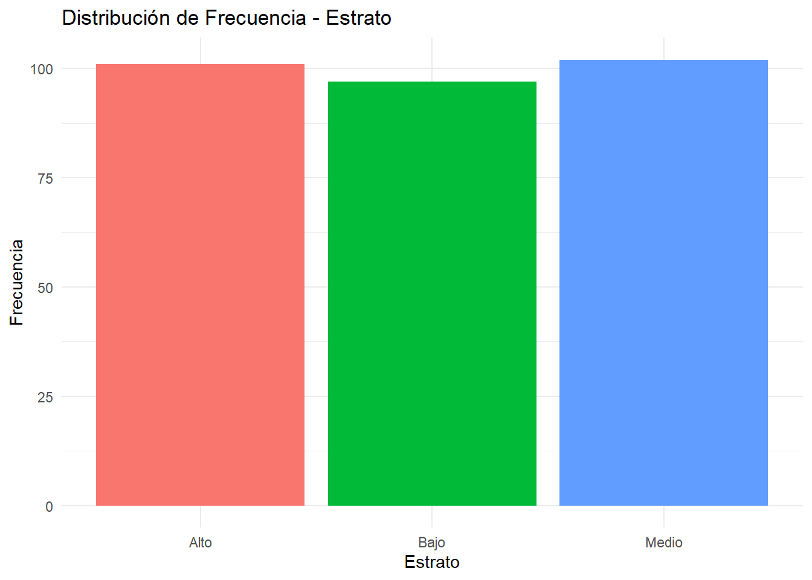
# Cargar las librerías necesarias
library(ggplot2)
library(dplyr)
library(readxl)
# Calcular los porcentajes de cada categoría en la variable GENERO
genero_counts <- educacion %>%
dplyr::count(Genero) %>%
mutate(porcentaje = n / sum(n) * 100)
# Crear el diagrama circular
ggplot(genero_counts, aes(x = "", y = porcentaje, fill = Genero)) +
geom_bar(stat = "identity", width = 1) +
scale_fill_manual(values = c("Femenino" = "#BD5EE0", "Masculino" = "#00FF22")) +
coord_polar("y") +
labs(title = "Distribución del genero") +
theme_minimal() +
theme(axis.title.x = element_blank(),
axis.title.y = element_blank(),
panel.grid = element_blank(),
axis.text.x = element_blank()) +
geom_text(aes(label = sprintf("%.1f%%", porcentaje)),
position = position_stack(vjust = 0.5),
color = "white",
size = 4)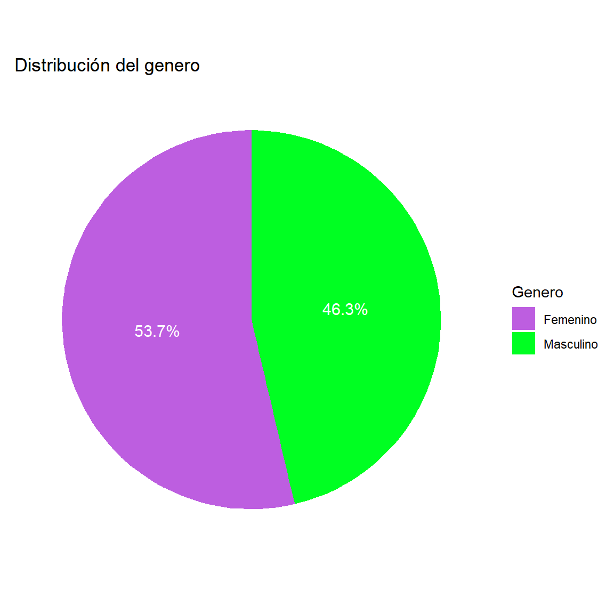
A partir de la tabla de distribución de frecuencias de la variable Género, se observa la proporción de estudiantes según su clasificación. La categoría con mayor frecuencia representa el grupo predominante dentro de la población analizada.
La gráfica de barras permite comparar de manera clara las diferencias en la cantidad de estudiantes por género, mientras que la gráfica circular facilita la visualización de la proporción que representa cada categoría respecto al total.
En términos generales, la distribución de la variable género permite identificar la composición de la población estudiantil, evidenciando si existe equilibrio o predominio de alguno de los grupos.
La variable ordinal tiene los cuatro tipos de frecuencias
# Crear la tabla original
tabla <- tibble(Nivel_Educativo= educacion$Nivel_Educativo) %>%
group_by(Nivel_Educativo) %>%
summarise(fi = n()) %>%
mutate(
hi = round(fi/sum(fi), 4),
Porcentaje = paste0(hi*100, "%"),
Fi = cumsum(fi),
Hi = cumsum(hi)
)
# Convertir las columnas Fucion, Fi, y Hi a character para evitar conflictos
tabla <- tabla %>% mutate(
Nivel_Educativo = as.character(Nivel_Educativo),
Fi = as.character(Fi),
Hi = as.character(Hi)
)
# Añadir la fila de totales, dejando Fi y Hi vacíos
totales <- tibble(
Nivel_Educativo = "Total",
fi = sum(tabla$fi),
hi = round(sum(tabla$hi), 4),
Porcentaje = paste0(round(sum(tabla$hi) * 100, 2), "%"),
Fi = "", # Puedes dejar en blanco o usar un valor numérico
Hi = "" # Puedes dejar en blanco o usar un valor numérico
)
# Combinar la tabla con los totales
tabla_final <- bind_rows(tabla, totales)
# Mostrar la tabla final con kable
tabla_final %>%
knitr::kable(
col.names = c("Nivel_Educativo", "fi", "hi", "Porcentaje", "Fi", "Hi"),
align = c("l", "c", "c", "c", "c", "c")
)| Nivel_Educativo | fi | hi | Porcentaje | Fi | Hi |
|---|---|---|---|---|---|
| Primaria | 93 | 0.31 | 31% | 93 | 0.31 |
| Secundaria | 105 | 0.35 | 35% | 198 | 0.66 |
| Universidad | 102 | 0.34 | 34% | 300 | 1 |
| Total | 300 | 1.00 | 100% |
# Cargar las librerías necesarias
library(ggplot2)
library(dplyr)
library(readxl)
# Calcular los porcentajes de cada categoría en la variable DEPORTE
Nivel_Educativo_counts <- educacion %>%
dplyr::count(Nivel_Educativo) %>%
mutate(porcentaje = n / sum(n) * 100)
# Crear el diagrama de barras
ggplot(Nivel_Educativo_counts, aes(x = Nivel_Educativo, y = porcentaje, fill = Nivel_Educativo)) +
geom_bar(stat = "identity") +
scale_fill_manual(values = c("Primaria" = "#FF00D1", "Secundaria" = "#1496FF", "Universidad" = "#BEFA89")) +
labs(title = "Distribución del Nivel_Educativo",
x = "Nivel_Educativo",
y = "Porcentaje") +
theme_minimal() +
theme(legend.position = "none") +
geom_text(aes(label = sprintf("%.1f%%", porcentaje)),
vjust = -0.5,
color = "black",
size = 3.5)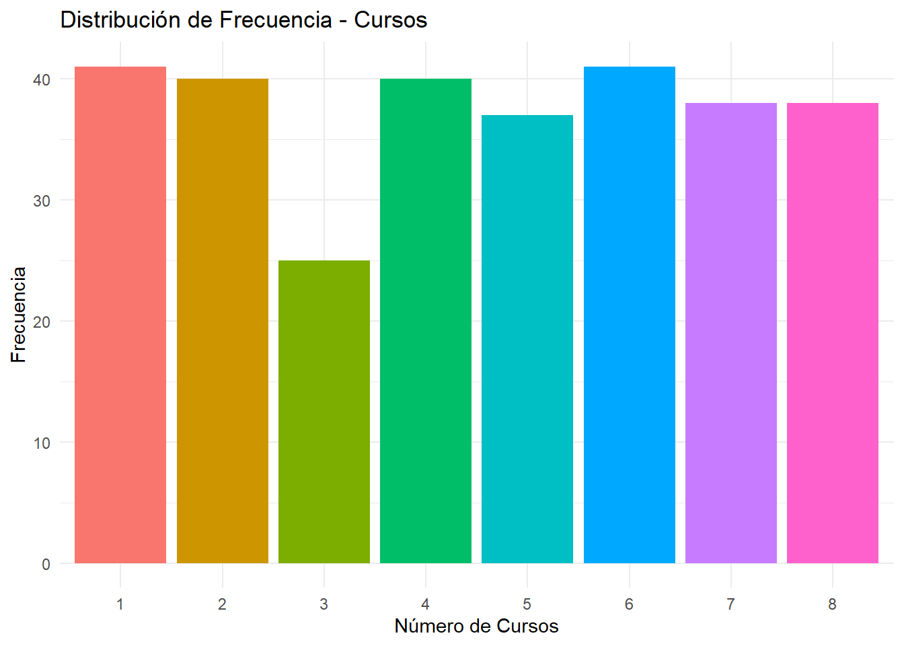
A partir de la tabla de distribución de frecuencias de la variable Nivel Educativo, se observa la proporción de estudiantes según su nivel de formación académica. La categoría con mayor frecuencia permite identificar el nivel predominante dentro de la población analizada.
La gráfica de barras facilita la comparación entre los distintos niveles (primaria, secundaria y universidad), mientras que la gráfica circular permite visualizar la participación porcentual de cada categoría en el total de la muestra.
En términos generales, la distribución del nivel educativo permite comprender la composición académica de los estudiantes, evidenciando posibles concentraciones en niveles específicos. Esto resulta relevante para interpretar otros resultados del análisis, ya que el nivel educativo puede influir en variables como el rendimiento académico y el uso de tecnología.
# Crear la tabla original
tabla <- tibble(Estrato= educacion$Estrato) %>%
group_by(Estrato) %>%
summarise(fi = n()) %>%
mutate(
hi = round(fi/sum(fi), 4),
Porcentaje = paste0(hi*100, "%"),
Fi = cumsum(fi),
Hi = cumsum(hi)
)
# Convertir las columnas Fucion, Fi, y Hi a character para evitar conflictos
tabla <- tabla %>% mutate(
Estrato = as.character(Estrato),
Fi = as.character(Fi),
Hi = as.character(Hi)
)
# Añadir la fila de totales, dejando Fi y Hi vacíos
totales <- tibble(
Estrato = "Total",
fi = sum(tabla$fi),
hi = round(sum(tabla$hi), 4),
Porcentaje = paste0(round(sum(tabla$hi) * 100, 2), "%"),
Fi = "", # Puedes dejar en blanco o usar un valor numérico
Hi = "" # Puedes dejar en blanco o usar un valor numérico
)
# Combinar la tabla con los totales
tabla_final <- bind_rows(tabla, totales)
# Mostrar la tabla final con kable
tabla_final %>%
knitr::kable(
col.names = c("Estrato", "fi", "hi", "Porcentaje", "Fi", "Hi"),
align = c("l", "c", "c", "c", "c", "c")
)| Estrato | fi | hi | Porcentaje | Fi | Hi |
|---|---|---|---|---|---|
| Bajo | 97 | 0.3233 | 32.33% | 97 | 0.3233 |
| Medio | 102 | 0.3400 | 34% | 199 | 0.6633 |
| Alto | 101 | 0.3367 | 33.67% | 300 | 1 |
| Total | 300 | 1.0000 | 100% |
# Cargar las librerías necesarias
library(ggplot2)
library(dplyr)
library(readxl)
# Calcular los porcentajes de cada categoría en la variable DEPORTE
Estrato_counts <- educacion %>%
dplyr::count(Estrato) %>%
mutate(porcentaje = n / sum(n) * 100)
# Crear el diagrama de barras
ggplot(Estrato_counts, aes(x = Estrato, y = porcentaje, fill = Estrato)) +
geom_bar(stat = "identity") +
scale_fill_manual(values = c("Bajo" = "#FF0000", "Medio" = "#FF9D00", "Alto" = "#FFD400")) +
labs(title = "Distribución del Estrato",
x = "Estrato",
y = "Porcentaje") +
theme_minimal() +
theme(legend.position = "none") +
geom_text(aes(label = sprintf("%.1f%%", porcentaje)),
vjust = -0.5,
color = "black",
size = 3.5)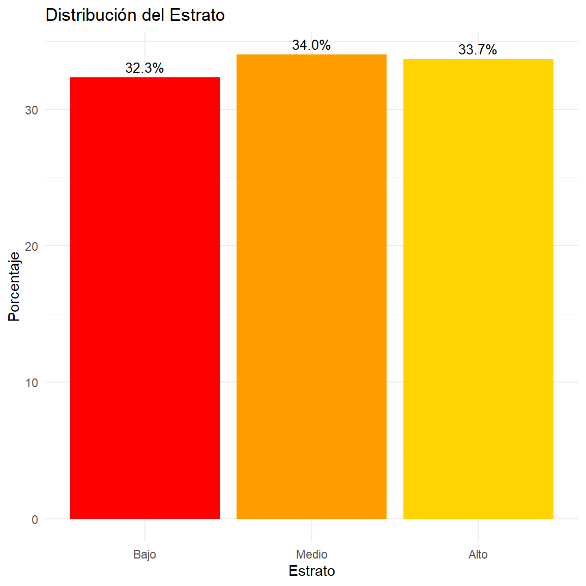
Esta tabla de frecuencia de la variable ESTRATO cuantitativa discreta, se muestra diferentes datos de educación, donde están encontrados muy equilibrados, dado a que no hay un porcentaje que predomine de forma drastica a los demas .
Basado en las gráficas de barras y circular se puede visualizar de forma directa una equivalencia muy cercana dado al porcentaje de cada estrato, esto puede indicar que el diseño da una representación equitativa de el sector.
En conclusión, dado a la integración de la tabla y las gráficas revela que la variable de ESTRATO muestra representativamente un balance simétrico.
# Crear la tabla original
tabla <- tibble(Tecnologia= educacion$Tecnologia) %>%
group_by(Tecnologia) %>%
summarise(fi = n()) %>%
mutate(
hi = round(fi/sum(fi), 4),
Porcentaje = paste0(hi*100, "%"),
Fi = cumsum(fi),
Hi = cumsum(hi)
)
# Convertir las columnas Fucion, Fi, y Hi a character para evitar conflictos
tabla <- tabla %>% mutate(
Tecnologia = as.character(Tecnologia),
Fi = as.character(Fi),
Hi = as.character(Hi)
)
# Añadir la fila de totales, dejando Fi y Hi vacíos
totales <- tibble(
Tecnologia = "Total",
fi = sum(tabla$fi),
hi = round(sum(tabla$hi), 4),
Porcentaje = paste0(round(sum(tabla$hi) * 100, 2), "%"),
Fi = "", # Puedes dejar en blanco o usar un valor numérico
Hi = "" # Puedes dejar en blanco o usar un valor numérico
)
# Combinar la tabla con los totales
tabla_final <- bind_rows(tabla, totales)
# Mostrar la tabla final con kable
tabla_final %>%
knitr::kable(
col.names = c("Tecnologia", "fi", "hi", "Porcentaje", "Fi", "Hi"),
align = c("l", "c", "c", "c", "c", "c")
)| Tecnologia | fi | hi | Porcentaje | Fi | Hi |
|---|---|---|---|---|---|
| Bajo | 112 | 0.3733 | 37.33% | 112 | 0.3733 |
| Medio | 108 | 0.3600 | 36% | 220 | 0.7333 |
| Alto | 80 | 0.2667 | 26.67% | 300 | 1 |
| Total | 300 | 1.0000 | 100% |
# Cargar las librerías necesarias
library(ggplot2)
library(dplyr)
library(readxl)
# Calcular los porcentajes de cada categoría en la variable DEPORTE
Tecnologia_counts <- educacion %>%
dplyr::count(Tecnologia) %>%
mutate(porcentaje = n / sum(n) * 100)
# Crear el diagrama de barras
ggplot(Tecnologia_counts, aes(x = Tecnologia, y = porcentaje, fill = Tecnologia)) +
geom_bar(stat = "identity") +
scale_fill_manual(values = c("Bajo" = "#00FFE6", "Medio" = "#00BFFF", "Alto" = "#0062FF")) +
labs(title = "Distribución de Tecnologia",
x = "Tecnologia",
y = "Porcentaje") +
theme_minimal() +
theme(legend.position = "none") +
geom_text(aes(label = sprintf("%.1f%%", porcentaje)),
vjust = -0.5,
color = "black",
size = 3.5)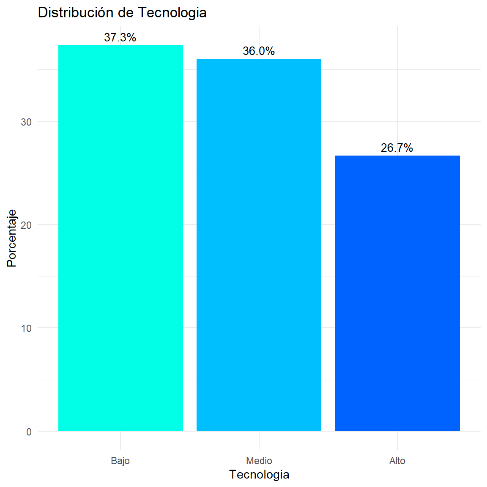
A partir de la tabla de distribución de frecuencias de la variable Tecnología, se observa la proporción de estudiantes según su nivel de acceso o uso de recursos tecnológicos. La categoría predominante permite identificar el nivel más frecuente dentro de la población analizada.
La gráfica de barras facilita la comparación entre los diferentes niveles (bajo, medio y alto), mientras que la gráfica circular permite visualizar la participación porcentual de cada categoría respecto al total.
En términos generales, la distribución de esta variable permite analizar el acceso a herramientas tecnológicas, lo cual es un factor relevante en el proceso educativo. Un predominio en niveles medios o altos puede indicar condiciones favorables para el aprendizaje mediado por tecnología, mientras que una mayor proporción en niveles bajos podría evidenciar limitaciones en el acceso a estos recursos.
library(dplyr)
library(knitr)
# 1. Crear la tabla base
tabla <- educacion %>%
group_by(Satisfaccion) %>%
summarise(fi = n()) %>%
mutate(
hi = round(fi/sum(fi), 4),
Porcentaje = paste0(hi * 100, "%"),
Fi = cumsum(fi),
Hi = cumsum(hi)
)
# 2. Preparar para combinar (convertir a character para permitir celdas vacías en Total)
tabla <- tabla %>% mutate(
Satisfaccion = as.character(Satisfaccion),
Fi = as.character(Fi),
Hi = as.character(Hi)
)
# 3. Fila de totales
totales <- tibble(
Satisfaccion = "Total",
fi = sum(as.numeric(tabla$fi)),
hi = sum(as.numeric(tabla$hi)),
Porcentaje = paste0(round(hi * 100, 2), "%"),
Fi = "",
Hi = ""
)
# 4. Combinar
tabla_final <- bind_rows(tabla, totales)
# 5. Mostrar (Ahora sí hay 6 columnas y 6 nombres)
tabla_final %>%
knitr::kable(
format = "simple",
col.names = c("Satisfacción", "fi", "hi", "Porcentaje", "Fi", "Hi"),
align = "lccccc",
caption = "Distribución de Frecuencias de Satisfacción"
)| Satisfacción | fi | hi | Porcentaje | Fi | Hi |
|---|---|---|---|---|---|
| Muy baja | 48 | 0.1600 | 16% | 48 | 0.16 |
| Baja | 65 | 0.2167 | 21.67% | 113 | 0.3767 |
| Media | 55 | 0.1833 | 18.33% | 168 | 0.56 |
| Alta | 65 | 0.2167 | 21.67% | 233 | 0.7767 |
| Muy alta | 67 | 0.2233 | 22.33% | 300 | 1 |
| Total | 300 | 1.0000 | 100% |
# Cargar las librerías necesarias
library(ggplot2)
library(dplyr)
library(readxl)
# 1. Calcular los porcentajes
# He cambiado 'Tecnologia' por 'Satisfaccion' para que coincida con el gráfico
Satisfaccion_counts <- educacion %>%
dplyr::count(Satisfaccion) %>%
mutate(porcentaje = n / sum(n) * 100)
# 2. Crear el diagrama de barras
ggplot(Satisfaccion_counts, aes(x = Satisfaccion, y = porcentaje, fill = Satisfaccion)) +
geom_bar(stat = "identity") +
# Asegúrate de que los nombres aquí coincidan con los niveles de tu variable
scale_fill_manual(values = c(
"Muy baja" = "#DD00FF",
"Baja" = "#FF00EE",
"Media" = "#FF00A2",
"Alta" = "#FF0066",
"Muy alta" = "#FF0037"
)) +
labs(
title = "Distribución de Satisfacción",
x = "Nivel de Satisfacción",
y = "Porcentaje"
) +
theme_minimal() +
theme(legend.position = "none") +
# Etiquetas de texto sobre las barras
geom_text(aes(label = sprintf("%.1f%%", porcentaje)),
vjust = -0.5,
color = "black",
size = 3.5)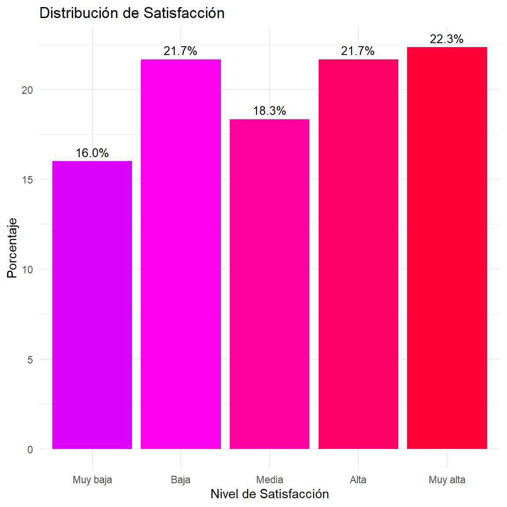
A partir de la distribución de la variable Satisfacción, se observa la percepción de los estudiantes respecto a su experiencia académica. La categoría con mayor frecuencia permite identificar el nivel predominante de satisfacción dentro del grupo.
La organización ordinal de la variable permite evidenciar una tendencia general, ya sea hacia niveles altos o bajos de satisfacción. En este sentido, la distribución de los datos proporciona información relevante sobre la calidad percibida del proceso educativo.
En términos generales, esta variable resulta fundamental para interpretar el comportamiento de otras variables analizadas, como el rendimiento académico y la asistencia, ya que refleja el grado de conformidad de los estudiantes con su entorno educativo.
La variable discreta tiene los cuatro tipos de frecuencias.
# Crear la tabla original
tabla <- tibble(Cursos = educacion$Cursos) %>%
group_by(Cursos) %>%
summarise(fi = n()) %>%
mutate(
hi = round(fi/sum(fi), 4),
Porcentaje = paste0(hi * 100, "%"),
Fi = cumsum(fi),
Hi = cumsum(hi)
)
# Convertir las columnas Personas, Fi, y Hi a character para evitar conflictos
tabla <- tabla %>% mutate(Cursos = as.character(Cursos),
Fi = as.character(Fi),
Hi = as.character(Hi)
)
# Añadir la fila de totales, dejando Fi y Hi vacíos
totales <- tibble(
Cursos = "Total",
fi = sum(tabla$fi),
hi = round(sum(tabla$hi), 2),
Porcentaje = paste0(round(sum(tabla$hi) * 100, 2), "%"),
Fi = "", # Puedes dejar en blanco o usar un valor numérico
Hi = "" # Puedes dejar en blanco o usar un valor numérico
)
# Combinar la tabla con los totales
tabla_final <- bind_rows(tabla, totales)
# Mostrar la tabla final con kable
tabla_final %>%
knitr::kable(
col.names = c("N Cursos", "fi", "hi", "Porcentaje", "Fi", "Hi"),
align = c("l", "r", "r", "r", "r", "r")
)| N Cursos | fi | hi | Porcentaje | Fi | Hi |
|---|---|---|---|---|---|
| 1 | 41 | 0.1367 | 13.67% | 41 | 0.1367 |
| 2 | 40 | 0.1333 | 13.33% | 81 | 0.27 |
| 3 | 25 | 0.0833 | 8.33% | 106 | 0.3533 |
| 4 | 40 | 0.1333 | 13.33% | 146 | 0.4866 |
| 5 | 37 | 0.1233 | 12.33% | 183 | 0.6099 |
| 6 | 41 | 0.1367 | 13.67% | 224 | 0.7466 |
| 7 | 38 | 0.1267 | 12.67% | 262 | 0.8733 |
| 8 | 38 | 0.1267 | 12.67% | 300 | 1 |
| Total | 300 | 1.0000 | 100% |
# valores de la variable
x <- c(1, 2, 3, 4, 5, 6, 7,8)
# f.m.p.
fx <- c(0.1367, 0.1333, 0.0833, 0.1333, 0.1233, 0.1367, 0.1267, 0.1267)
# Crear un dataframe con los datos
df <- data.frame(x = x, fx = fx)
# Gráfico con ggplot2
ggplot(df, aes(x = x, y = fx)) +
geom_point(shape = 18, color = "Red") +
geom_segment(aes(xend = x, yend = 0), size = 1, color = "purple") +
labs(x = "N de Cursos", y = "Porcentaje", title = "Diagrama de bastones") +
theme_minimal() +
geom_text(aes(label = fx), vjust = -0.5)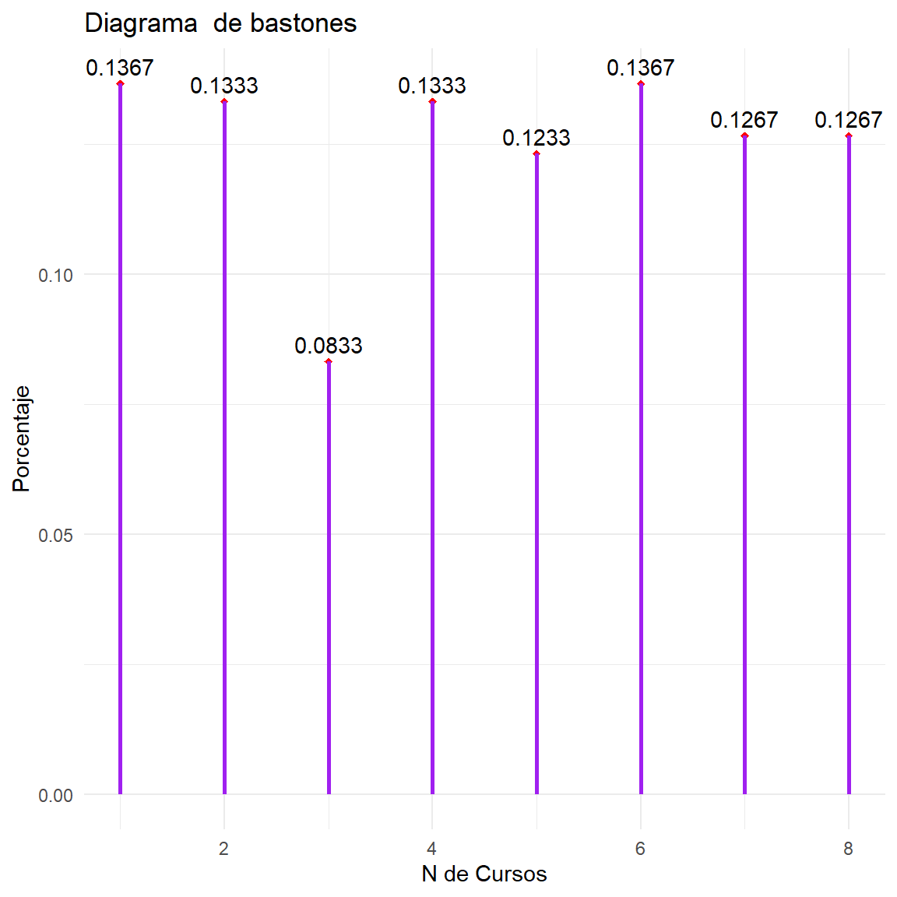
# Cargar librerías
library(ggplot2)
library(tibble)
# Crear datos
df <- tibble(
x = c(1, 2, 3, 4, 5, 6, 7, 8),
Hi = c(0.1367, 0.27, 0.3533, 0.4866, 0.6099, 0.7466, 0.8733,1)
)
# Gráfica de función de distribución acumulada
ggplot(df, aes(x = x, y = Hi)) +
geom_step(color = "#0033FF", size = 1.2) + # línea escalonada (CDF)
geom_point(color = "#E74C3C", size = 3) + # puntos
scale_x_continuous(breaks = df$x) +
scale_y_continuous(limits = c(0, 1)) +
labs(
title = "Función de Distribución de Cursos",
x = "N Cursos",
y = "Frecuencia relativa acumulada (Hi)"
) +
theme_minimal(base_size = 14) +
theme(
plot.title = element_text(face = "bold", hjust = 0.5),
panel.grid.minor = element_blank()
)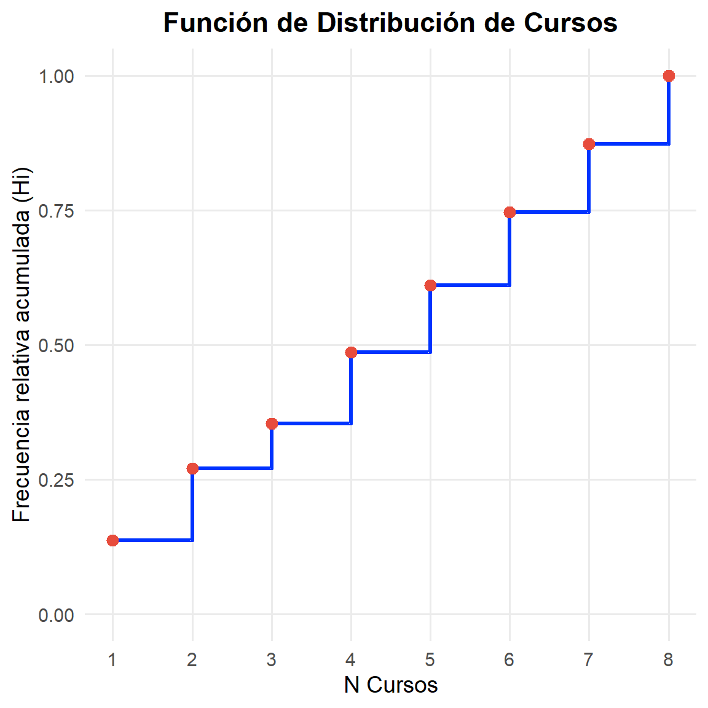
En la tabla de frecuencia de la variable CURSOS, se puede encontrar diferentes intervalos que representan los grados cursados, se destaca una participación muy similar, rodean entre 12% y 13% a diferencia de un curso que conlleva un porcentaje menor.
Estas gráficos de bastones y escalonadas ofrecen la composición del total de los cursos, evidenciando la perspectiva de una visión ligera en todos los cursos dando a entender el balance de ellas.
Min <- min(educacion$Horas)
Min[1] 1Max <- max(educacion$Horas)
Max[1] 29R <- Max-Min
R[1] 28m <- ceiling(1 + 3.322*log10(nrow(educacion)))
m[1] 10A <- ceiling((R/m) * 1) / 1
A[1] 3RC <- A*m
RC[1] 30La amplitud debe tener tanto decimales como lo tienen los datos originales. Si tienen un decimal la formula se multiplica y se divido por 10. Si tiene dos decimales la formula se multiplica y se divide por 10, así sucesivamente.
D <- RC-R
D[1] 2Xmin <- Min
Xmin[1] 1Xmax <- Max+4
Xmax[1] 33La diferencia se debe dividir en dos números lo más equitativos de tal manera que estos números tengan tanto decimales como las datos originales. Al mínimo se le resta uno de los números y al máximo se le suma el otro.
library(dplyr)
library(kableExtra)
m1 <- (Xmin+(Xmin+A))/2
interv = cut(x = educacion$Horas, breaks = seq(Xmin, Xmax, by = A), include.lowest = TRUE)
tabla <- tibble(Horas = interv) %>%
group_by(Horas) %>%
summarise(fi = n()) %>%
mutate(hi = fi / sum(fi)) %>%
mutate(
mi = seq(m1, by = A, length.out = n()) %>% as.character(),
Fi = cumsum(fi) %>% as.character(),
Hi = cumsum(fi / sum(fi)) %>% as.character()
) %>%
relocate(Horas, mi, fi)
# Agregar la fila total con casillas en blanco
tabla <- tabla %>%
add_row(Horas = "Total", mi = "", fi = sum(tabla$fi), hi = sum(tabla$hi), Fi = "", Hi = "")
# Generar la tabla con knitr::kable y agregar título
tabla %>%
knitr::kable(
col.names = c("Horas", "mi", "fi", "hi", "Fi", "Hi"),
align = c("l", "r", "r", "r", "r", "r")
) %>%
kableExtra::kable_styling(full_width = FALSE) %>%
kableExtra::add_header_above(c("Distribuciones de frecuencias para la variable Hora" = 6))| Horas | mi | fi | hi | Fi | Hi |
|---|---|---|---|---|---|
| [1,4] | 2.5 | 29 | 0.0966667 | 29 | 0.0966666666666667 |
| (4,7] | 5.5 | 30 | 0.1000000 | 59 | 0.196666666666667 |
| (7,10] | 8.5 | 30 | 0.1000000 | 89 | 0.296666666666667 |
| (10,13] | 11.5 | 27 | 0.0900000 | 116 | 0.386666666666667 |
| (13,16] | 14.5 | 29 | 0.0966667 | 145 | 0.483333333333333 |
| (16,19] | 17.5 | 31 | 0.1033333 | 176 | 0.586666666666667 |
| (19,22] | 20.5 | 48 | 0.1600000 | 224 | 0.746666666666667 |
| (22,25] | 23.5 | 25 | 0.0833333 | 249 | 0.83 |
| (25,28] | 26.5 | 43 | 0.1433333 | 292 | 0.973333333333333 |
| (28,31] | 29.5 | 8 | 0.0266667 | 300 | 1 |
| Total | 300 | 1.0000000 |
# Librerías
library(ggplot2)
# Dataframe (tus datos)
Horas <- data.frame(
li = c(1, 2, 3, 4, 5, 6, 7, 8, 9, 10, 11, 12, 13, 14, 15, 16, 17, 18, 19, 20, 21, 22, 23, 24, 25, 26, 27, 28),
ls = c(2, 3, 4, 5, 6, 7, 8, 9, 10, 11, 12, 13, 14, 15, 16, 17, 18, 19, 20, 21, 22, 23, 24, 25, 26, 27, 28, 29),
fi = c(13, 9, 7, 15, 6, 9, 10, 11, 9, 7, 8, 12, 6, 12, 11, 12, 7, 12, 17, 14, 17, 5, 10, 10, 17, 15, 11, 8)
)
# Histograma real con intervalos
ggplot(Horas) +
geom_rect(aes(
xmin = li,
xmax = ls,
ymin = 0,
ymax = fi
),
fill = "#CB73FF",
color = "#000875"
) +
labs(
title = "Histograma de las horas de educación",
x = "Horas",
y = "Frecuencia"
) +
theme_minimal(base_size = 14) +
theme(
plot.title = element_text(hjust = 0.5, face = "bold")
)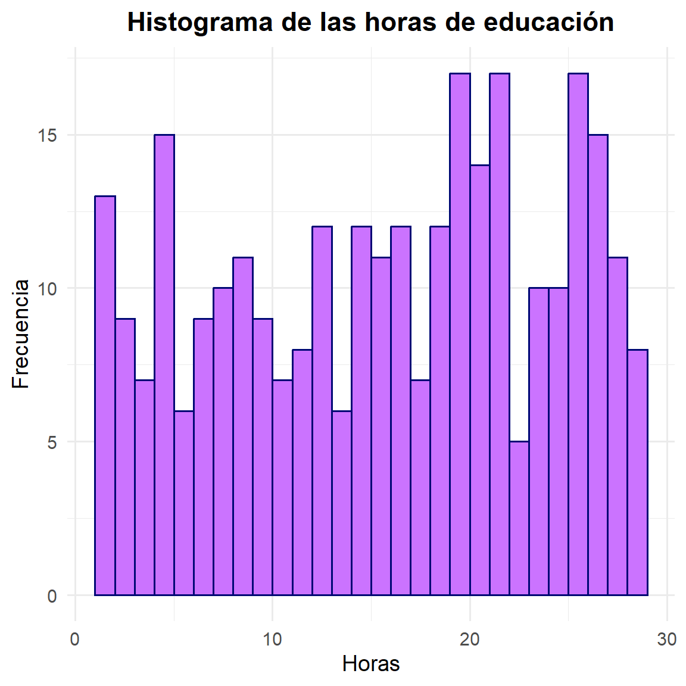
library(dplyr)
library(ggplot2)
library(tibble)
Horas <- tibble(
li = c(1, 2, 3, 4, 5, 6, 7, 8, 9, 10, 11, 12, 13, 14, 15, 16, 17, 18, 19, 20, 21, 22, 23, 24, 25, 26, 27, 28),
ls = c(2, 3, 4, 5, 6, 7, 8, 9, 10, 11, 12, 13, 14, 15, 16, 17, 18, 19, 20, 21, 22, 23, 24, 25, 26, 27, 28, 29),
fi = c(13, 9, 7, 15, 6, 9, 10, 11, 9, 7, 8, 12, 6, 12, 11, 12, 7, 12, 17, 14, 17, 5, 10, 10, 17, 15, 11, 8)
)
# Calcular acumuladas
Horas <- Horas %>%
mutate(
Fi = cumsum(fi),
Hi = Fi / sum(fi)
)
# Graficar ojiva
ggplot(Horas, aes(x = ls, y = Hi)) +
geom_line(color = "#CB73FF", size = 1) +
geom_point(color = "#000875", size = 2) +
labs(
title = "Ojiva de la hora de educacion",
x = "Hora (límite superior del intervalo)",
y = "Frecuencia acumulada relativa"
) +
scale_y_continuous(labels = scales::percent) +
theme_minimal()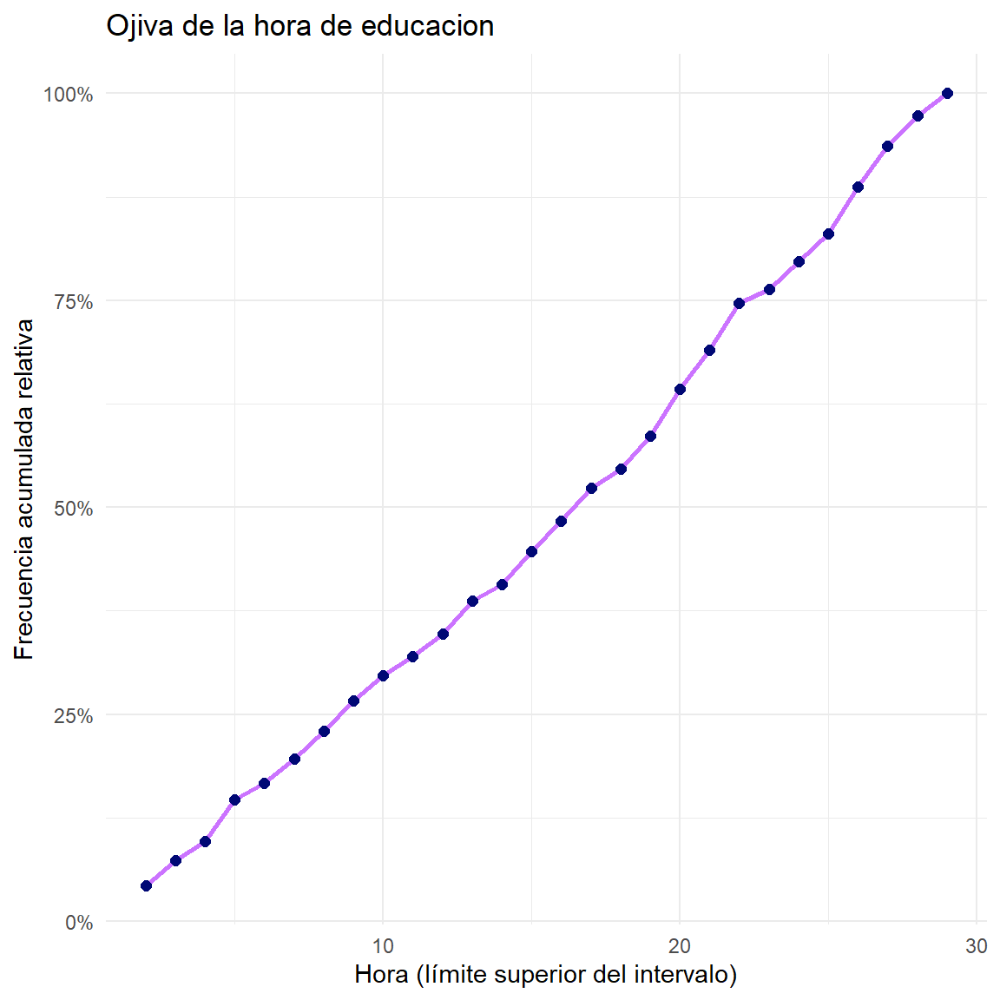
# Librerías
library(dplyr)
Horas <- data.frame(
mi = c(1.5, 2.5, 3.5, 4.5, 6.5, 7.5, 8.5, 9.5, 10.5, 11.5, 12.5, 13.5, 14.5, 15.5, 16.5, 17.5, 18.5, 19.5, 20.5, 21.5, 22.5, 23.5, 24.5, 25.5, 26.5, 27.5, 28.5, 29.5),
fi = c(13, 9, 7, 15, 6, 9, 10, 11, 9, 7, 8, 12, 6, 12, 11, 12, 7, 12, 17, 14, 17, 5, 10, 10, 17, 15, 11, 8)
)
Horas_expandido <- Horas %>%
slice(rep(1:n(), fi))
dens <- density(Horas_expandido$mi)
plot(dens,
main = "Densidad",
xlab = "Horas",
ylab = "Densidad",
col = "#6648F7",
lwd = 2)
polygon(dens, col = rgb(1, 0, 0, 0.5), border = "#CB73FF")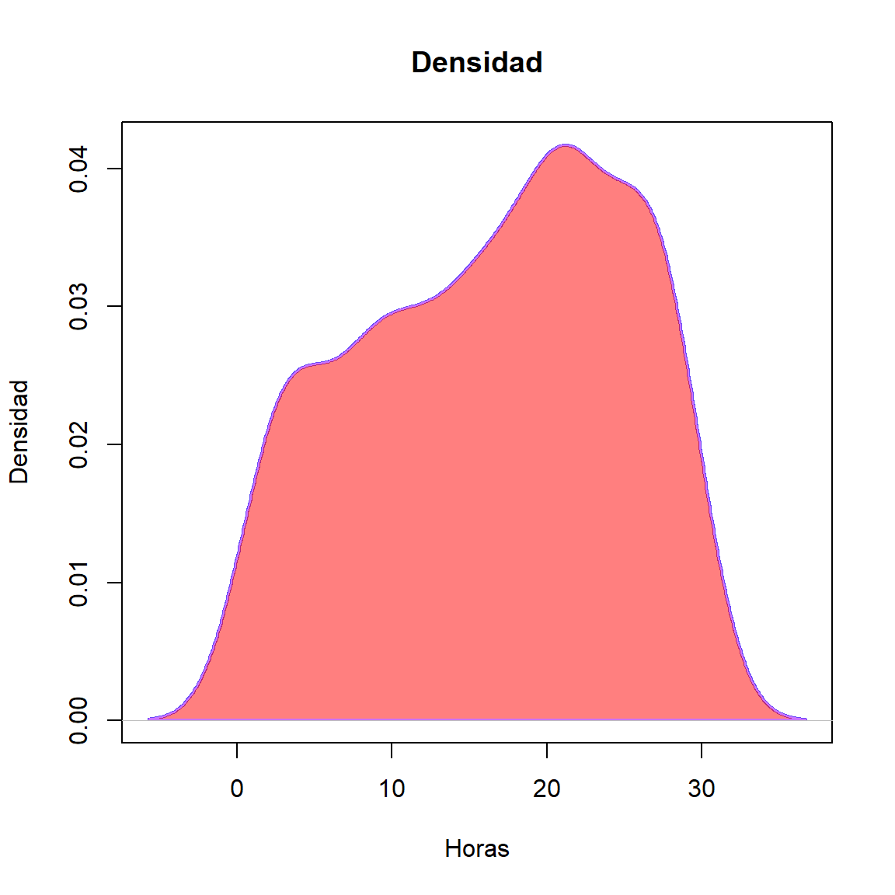
A partir de la tabla de distribución de frecuencias de la variable Horas, se observa que los datos se agrupan en diferentes intervalos que representan el tiempo de dedicación de los estudiantes. La mayor concentración de frecuencias se presenta en los intervalos intermedios, lo que indica que la mayoría de los estudiantes dedica una cantidad moderada de horas al estudio.
El histograma permite visualizar la forma de la distribución, evidenciando una tendencia aproximadamente uniforme con ligera concentración en ciertos rangos, lo que sugiere que no existe una dispersión extrema de los datos. Asimismo, se puede identificar que los valores mínimos y máximos no presentan comportamientos atípicos significativos.
En términos generales, la distribución de las horas de estudio muestra un comportamiento relativamente equilibrado, lo cual puede interpretarse como una consistencia en los hábitos de estudio de los estudiantes analizados.
Min <- min(educacion$Promedio)
Min[1] 1Max <- max(educacion$Promedio)
Max[1] 4R <- Max-Min
R[1] 3m <- ceiling(1 + 3.322*log10(nrow(educacion)))
m[1] 10A <- ceiling((R/m) * 1) / 1
A[1] 1RC <- A*m
RC[1] 10D <- RC - R
D[1] 7Xmin <- Min
Xmin[1] 1Xmax <- Max+4
Xmax[1] 8library(dplyr)
library(kableExtra)
m1 <- (Xmin+(Xmin+A))/2
interv = cut(x = educacion$Promedio, breaks = seq(Xmin, Xmax, by = A), include.lowest = TRUE)
tabla <- tibble(Promedio = interv) %>%
group_by(Promedio) %>%
summarise(fi = n()) %>%
mutate(hi = fi / sum(fi)) %>%
mutate(
mi = seq(m1, by = A, length.out = n()) %>% as.character(),
Fi = cumsum(fi) %>% as.character(),
Hi = cumsum(fi / sum(fi)) %>% as.character()
) %>%
relocate(Promedio, mi, fi)
# Agregar la fila total con casillas en blanco
tabla <- tabla %>%
add_row(Promedio = "Total", mi = "", fi = sum(tabla$fi), hi = sum(tabla$hi), Fi = "", Hi = "")
# Generar la tabla con knitr::kable y agregar título
tabla %>%
knitr::kable(
col.names = c("Promedio", "mi", "fi", "hi", "Fi", "Hi"),
align = c("l", "r", "r", "r", "r", "r")
) %>%
kableExtra::kable_styling(full_width = FALSE) %>%
kableExtra::add_header_above(c("Distribuciones de frecuencias para la variable Promedio" = 6))| Promedio | mi | fi | hi | Fi | Hi |
|---|---|---|---|---|---|
| [1,2] | 1.5 | 140 | 0.4666667 | 140 | 0.466666666666667 |
| (2,3] | 2.5 | 81 | 0.2700000 | 221 | 0.736666666666667 |
| (3,4] | 3.5 | 79 | 0.2633333 | 300 | 1 |
| Total | 300 | 1.0000000 |
# Librerías
library(ggplot2)
# Dataframe (tus datos)
Promedio <- data.frame(
li = c(1, 2, 3),
ls = c(2, 3, 4),
fi = c(140,81, 79)
)
# Histograma real con intervalos
ggplot(Promedio) +
geom_rect(aes(
xmin = li,
xmax = ls,
ymin = 0,
ymax = fi
),
fill = "#A427AB",
color = "#E01F1F"
) +
labs(
title = "Histograma del promedio de educación",
x = "promedio",
y = "Frecuencia"
) +
theme_minimal(base_size = 14) +
theme(
plot.title = element_text(hjust = 0.5, face = "bold")
)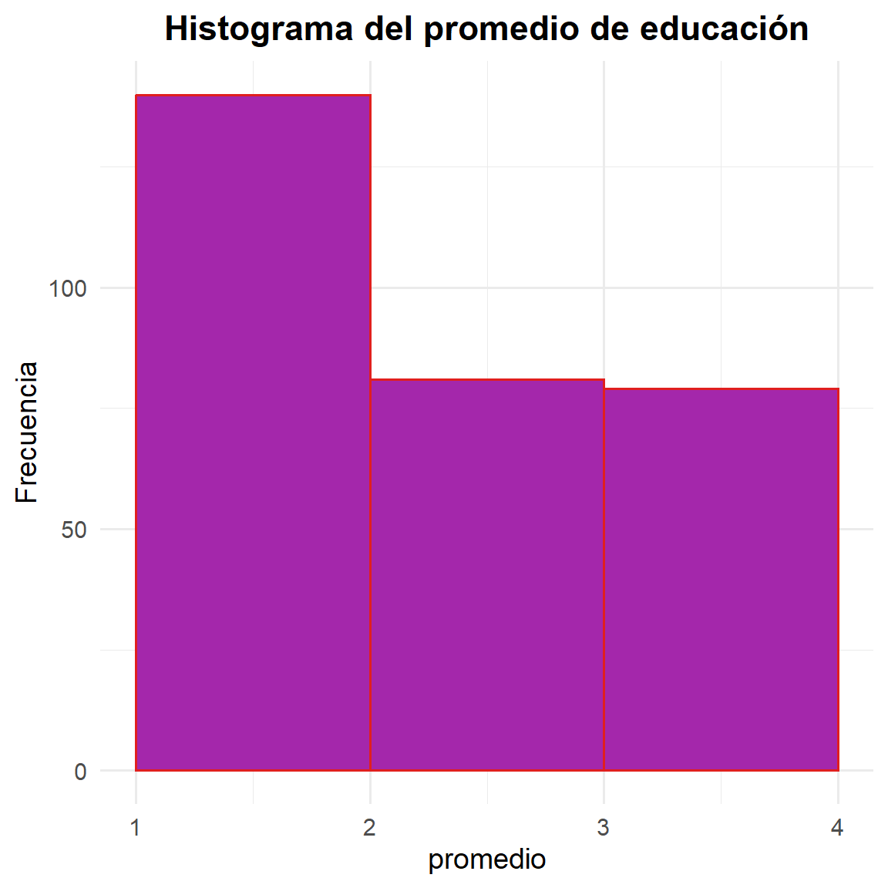
library(dplyr)
library(ggplot2)
library(tibble)
Promedio <- tibble(
li = c(1, 2, 3),
ls = c(2, 3, 4),
fi = c(140,81, 79)
)
# Calcular acumuladas
Promedio <- Promedio %>%
mutate(
Fi = cumsum(fi),
Hi = Fi / sum(fi)
)
# Graficar ojiva
ggplot(Promedio, aes(x = ls, y = Hi)) +
geom_line(color = "#A427AB", size = 1) +
geom_point(color = "#E01F1F", size = 2) +
labs(
title = "Ojiva del promedio de educacion",
x = "Promedio (límite superior del intervalo)",
y = "Frecuencia acumulada relativa"
) +
scale_y_continuous(labels = scales::percent) +
theme_minimal()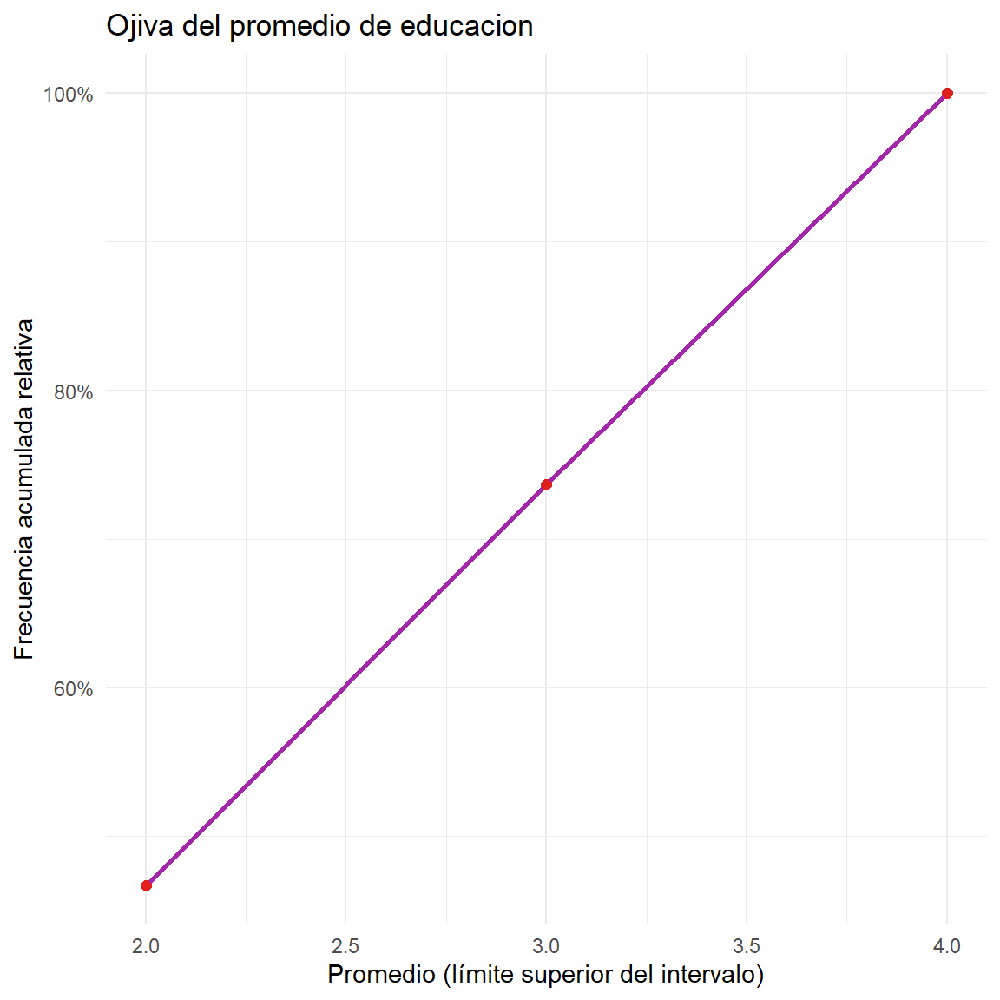
# Librerías
library(dplyr)
Promedio <- data.frame(
mi = c(1.5, 2.5, 3.5),
fi = c(140,81, 79)
)
Promedio_expandido <- Promedio %>%
slice(rep(1:n(), fi))
dens <- density(Promedio_expandido$mi)
plot(dens,
main = "Densidad",
xlab = "Promedio",
ylab = "Densidad",
col = "#A427AB",
lwd = 2)
polygon(dens, col = rgb(1, 0, 0, 0.5), border = "#E01F1F")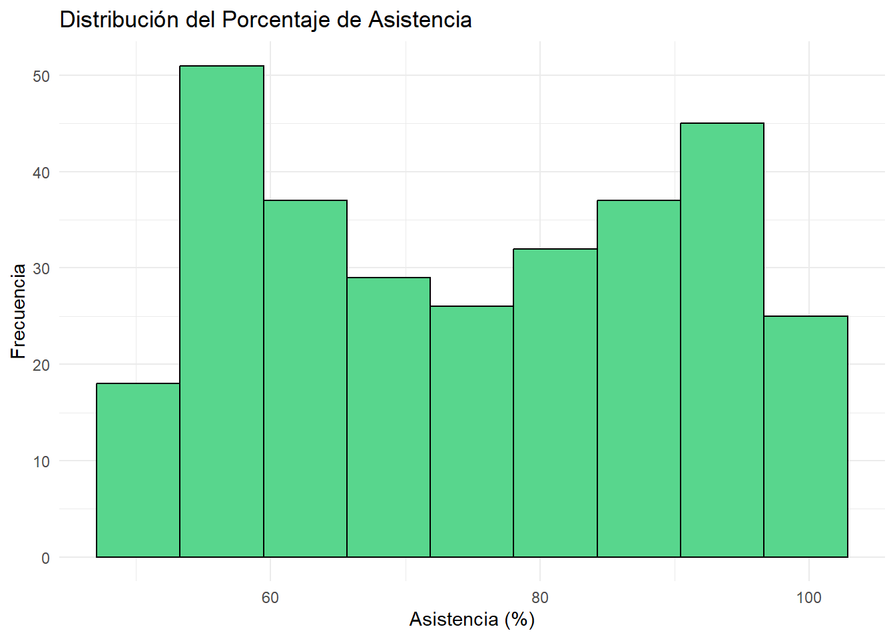
A partir de la tabla de distribución de frecuencias de la variable Promedio, se evidencia que los datos se concentran principalmente en los intervalos intermedios, lo que indica que la mayoría de los estudiantes presenta un rendimiento académico moderado.
El histograma permite observar la forma de la distribución, mostrando una tendencia relativamente equilibrada, sin presencia de valores extremos significativos. Esto sugiere que los promedios académicos se encuentran distribuidos de manera homogénea dentro del grupo analizado.
Asimismo, el polígono de frecuencia refuerza la identificación de los intervalos con mayor concentración, evidenciando una posible ligera tendencia central. En términos generales, la distribución del promedio académico refleja estabilidad en el rendimiento de los estudiantes, sin variaciones abruptas.
Min <- min(educacion$Asistencia)
Min[1] 50 Max <- max(educacion$Asistencia)
Max[1] 99R <- Max-Min
R[1] 49m <- ceiling(1 + 3.322*log10(nrow(educacion)))
m[1] 10A <- ceiling((R/m) * 1) / 1
A[1] 5RC <- A*m
RC[1] 50D <- RC-R
D[1] 1Xmin <- Min
Xmin[1] 50Xmax <- Max+4
Xmax[1] 103library(dplyr)
library(kableExtra)
m1 <- (Xmin+(Xmin+A))/2
interv = cut(x = educacion$Asistencia, breaks = seq(Xmin, Xmax, by = A), include.lowest = TRUE)
tabla <- tibble(Asistencia = interv) %>%
group_by(Asistencia) %>%
summarise(fi = n()) %>%
mutate(hi = fi / sum(fi)) %>%
mutate(
mi = seq(m1, by = A, length.out = n()) %>% as.character(),
Fi = cumsum(fi) %>% as.character(),
Hi = cumsum(fi / sum(fi)) %>% as.character()
) %>%
relocate(Asistencia, mi, fi)
# Agregar la fila total con casillas en blanco
tabla <- tabla %>%
add_row(Asistencia = "Total", mi = "", fi = sum(tabla$fi), hi = sum(tabla$hi), Fi = "", Hi = "")
# Generar la tabla con knitr::kable y agregar título
tabla %>%
knitr::kable(
col.names = c("Asistencia", "mi", "fi", "hi", "Fi", "Hi"),
align = c("l", "r", "r", "r", "r", "r")
) %>%
kableExtra::kable_styling(full_width = FALSE) %>%
kableExtra::add_header_above(c("Distribuciones de frecuencias para la variable Asistencia" = 6))| Asistencia | mi | fi | hi | Fi | Hi |
|---|---|---|---|---|---|
| [50,55] | 52.5 | 42 | 0.1400000 | 42 | 0.14 |
| (55,60] | 57.5 | 30 | 0.1000000 | 72 | 0.24 |
| (60,65] | 62.5 | 36 | 0.1200000 | 108 | 0.36 |
| (65,70] | 67.5 | 22 | 0.0733333 | 130 | 0.433333333333333 |
| (70,75] | 72.5 | 19 | 0.0633333 | 149 | 0.496666666666667 |
| (75,80] | 77.5 | 15 | 0.0500000 | 164 | 0.546666666666667 |
| (80,85] | 82.5 | 41 | 0.1366667 | 205 | 0.683333333333333 |
| (85,90] | 87.5 | 28 | 0.0933333 | 233 | 0.776666666666667 |
| (90,95] | 92.5 | 41 | 0.1366667 | 274 | 0.913333333333333 |
| (95,100] | 97.5 | 26 | 0.0866667 | 300 | 1 |
| Total | 300 | 1.0000000 |
# Librerías
library(ggplot2)
# Dataframe (tus datos)
Asistencia <- data.frame(
li = c(50, 55, 60, 65, 70, 75, 80, 85, 90, 95),
ls = c(55,60, 65, 70, 75, 80, 85, 90, 95, 100),
fi = c(42, 30, 36, 22, 19, 15, 41, 28, 41, 26)
)
# Histograma real con intervalos
ggplot(Asistencia) +
geom_rect(aes(
xmin = li,
xmax = ls,
ymin = 0,
ymax = fi
),
fill = "#45BFB8",
color = "#39F7EB"
) +
labs(
title = "Histograma de la asistencia de educación",
x = "Asistencia",
y = "Frecuencia"
) +
theme_minimal(base_size = 14) +
theme(
plot.title = element_text(hjust = 0.5, face = "bold")
)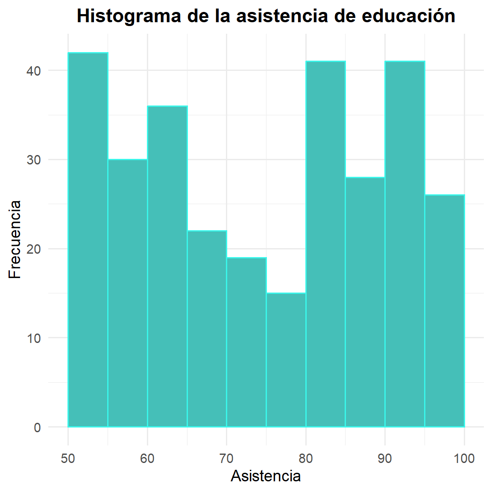
library(dplyr)
library(ggplot2)
library(tibble)
Asistencia <- tibble(
li = c(50, 55, 60, 65, 70, 75, 80, 85, 90, 95),
ls = c(55,60, 65, 70, 75, 80, 85, 90, 95, 100),
fi = c(42, 30, 36, 22, 19, 15, 41, 28, 41, 26)
)
# Calcular acumuladas
Asistencia <- Asistencia %>%
mutate(
Fi = cumsum(fi),
Hi = Fi / sum(fi)
)
# Graficar ojiva
ggplot(Asistencia, aes(x = ls, y = Hi)) +
geom_line(color = "#39F7EB", size = 1) +
geom_point(color = "#45BFB8", size = 2) +
labs(
title = "Ojiva de la asistencia de educacion",
x = "Asistencia (límite superior del intervalo)",
y = "Frecuencia acumulada relativa"
) +
scale_y_continuous(labels = scales::percent) +
theme_minimal()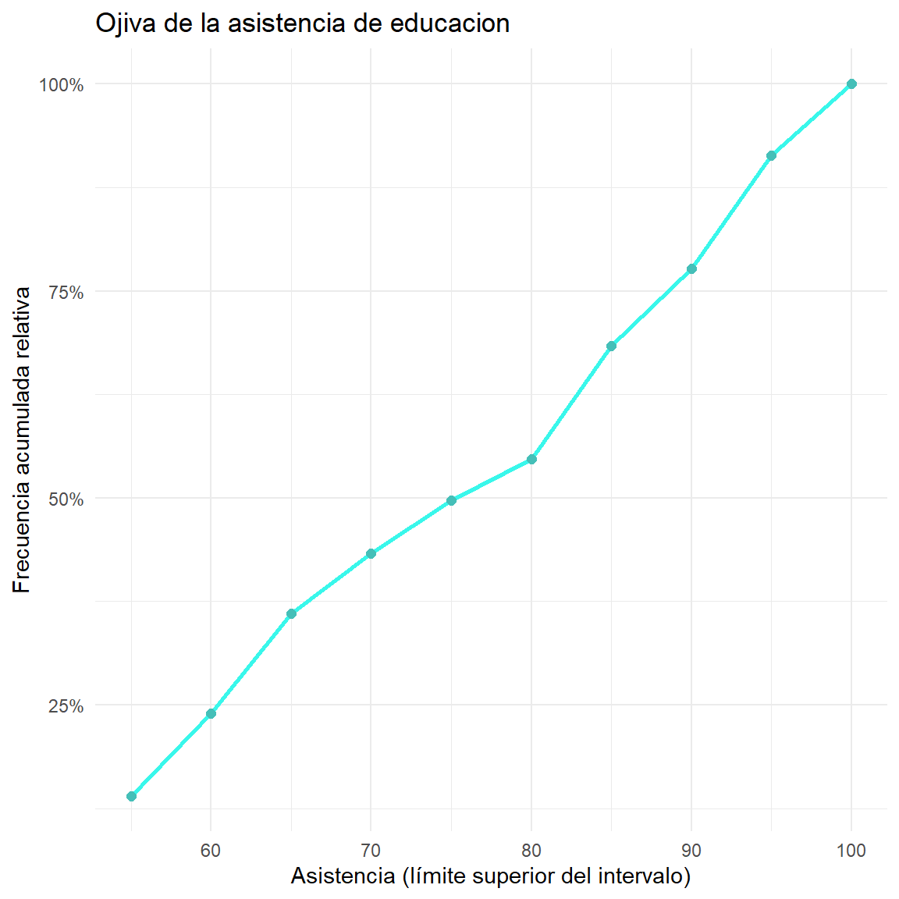
# Librerías
library(dplyr)
Asistencia <- data.frame(
mi = c(52.5, 57.5, 62.5, 67.5, 72.5, 77.5, 82.5, 87.5, 92.5, 97.5),
fi = c(42, 30, 36, 22, 19, 15, 41, 28, 41, 26)
)
Asistencia_expandido <- Asistencia %>%
slice(rep(1:n(), fi))
dens <- density(Promedio_expandido$mi)
plot(dens,
main = "Densidad",
xlab = "Asistencia",
ylab = "Densidad",
col = "#45BFB8",
lwd = 2)
polygon(dens, col = rgb(1, 0, 0, 0.5), border = "#39F7EB")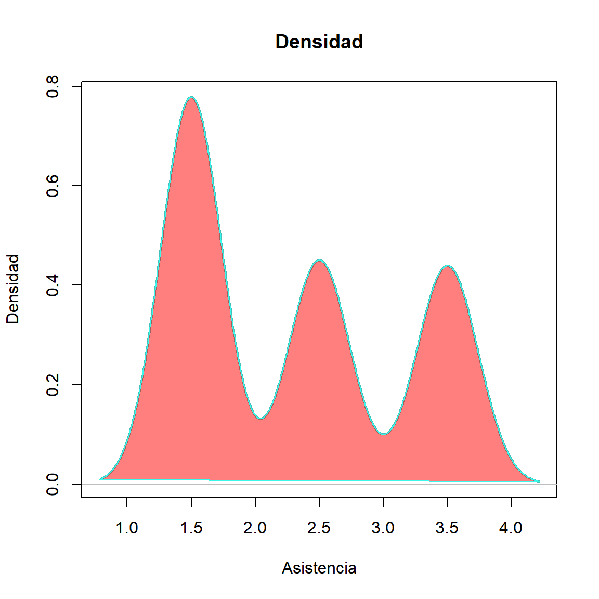
A partir de la tabla de distribución de frecuencias de la variable Asistencia (%), se observa que los datos se concentran principalmente en los intervalos medios y altos, lo que indica que la mayoría de los estudiantes presenta niveles de asistencia relativamente elevados.
El histograma permite identificar la forma de la distribución, evidenciando una tendencia hacia valores altos de asistencia, lo cual sugiere un comportamiento positivo en términos de compromiso académico por parte de los estudiantes.
Asimismo, el polígono de frecuencia refuerza la concentración de datos en los intervalos superiores, lo que puede interpretarse como una baja proporción de estudiantes con inasistencias frecuentes. En general, la distribución presenta una ligera asimetría hacia la izquierda, indicando predominio de valores altos.
A partir del análisis estadístico realizado mediante distribuciones de frecuencia, fue posible organizar, sintetizar e interpretar la información correspondiente a la población estudiantil, permitiendo una comprensión integral de sus características sociodemográficas y académicas.
En primer lugar, la clasificación de las variables permitió aplicar adecuadamente las herramientas de la estadística descriptiva, diferenciando entre variables cualitativas y cuantitativas, así como entre discretas y continuas. Esta distinción resultó fundamental para la construcción correcta de las tablas de frecuencia y sus respectivas representaciones gráficas, garantizando la validez del análisis.
Asimismo, el estudio evidenció patrones relevantes en la población analizada. En variables cualitativas como género, nivel educativo, tecnología y satisfacción, se identificaron distribuciones que permiten comprender la composición del grupo y las condiciones en las que se desarrolla el proceso educativo. Particularmente, el nivel de acceso a la tecnología y la percepción de satisfacción constituyen elementos clave para interpretar el contexto educativo y su posible incidencia en el aprendizaje.
Por otra parte, el análisis de las variables cuantitativas, tales como número de cursos, horas de estudio, promedio académico y porcentaje de asistencia, permitió observar tendencias en el comportamiento académico de los estudiantes. La agrupación en intervalos y el uso de histogramas facilitaron la identificación de concentraciones de datos, así como la forma de las distribuciones, evidenciando en general comportamientos relativamente estables y sin presencia significativa de valores atípicos.
De igual manera, la integración de tablas de frecuencia con representaciones gráficas fortaleció la interpretación de los resultados, ya que permitió visualizar de manera clara y precisa las relaciones y tendencias presentes en los datos. Este enfoque contribuye no solo a una mejor comprensión de la información, sino también a la toma de decisiones fundamentadas en evidencia.
En conclusión, el uso de las distribuciones de frecuencia como herramienta de análisis estadístico permitió describir de manera rigurosa la realidad de la población estudiada, evidenciando la importancia de la estadística descriptiva en el ámbito educativo. Este tipo de análisis no solo facilita la interpretación de datos, sino que también constituye una base sólida para estudios más avanzados y para la formulación de estrategias orientadas al mejoramiento del proceso educativo.